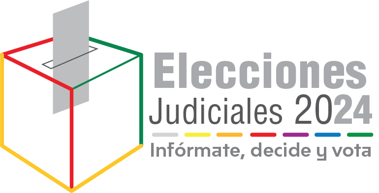
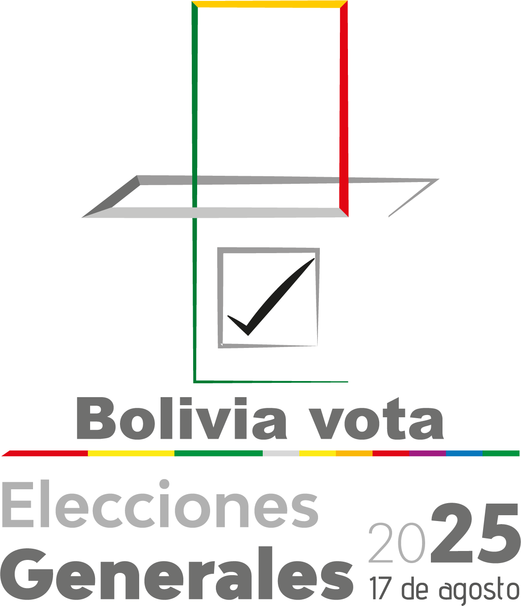
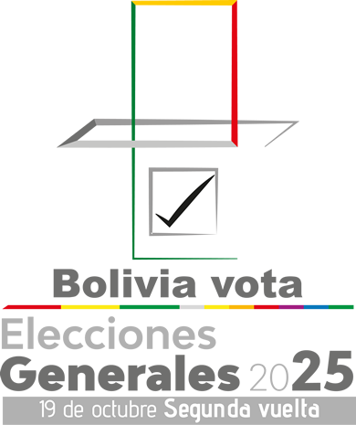
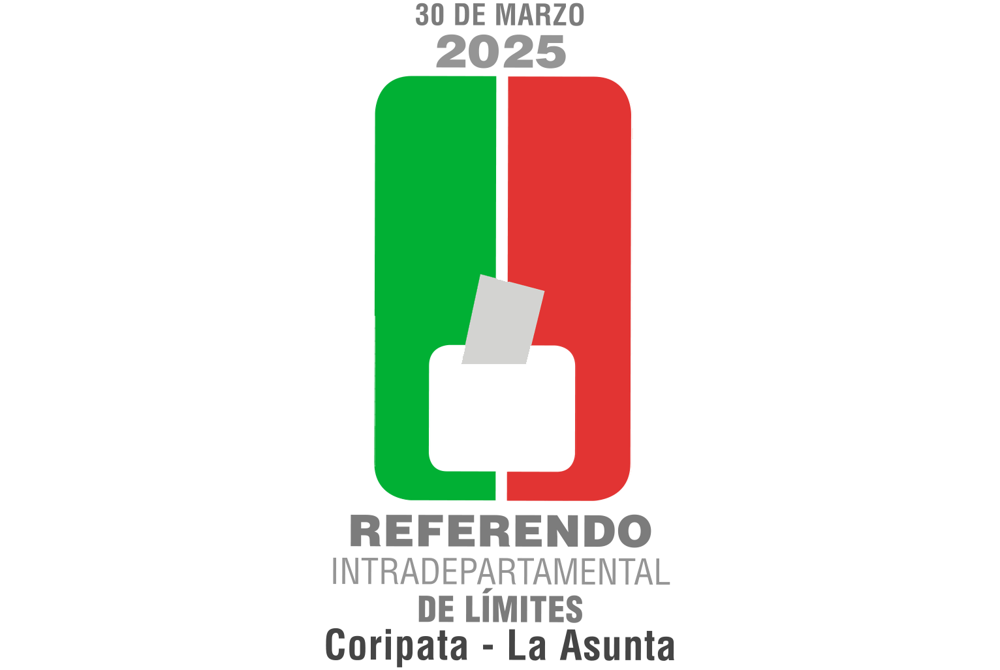
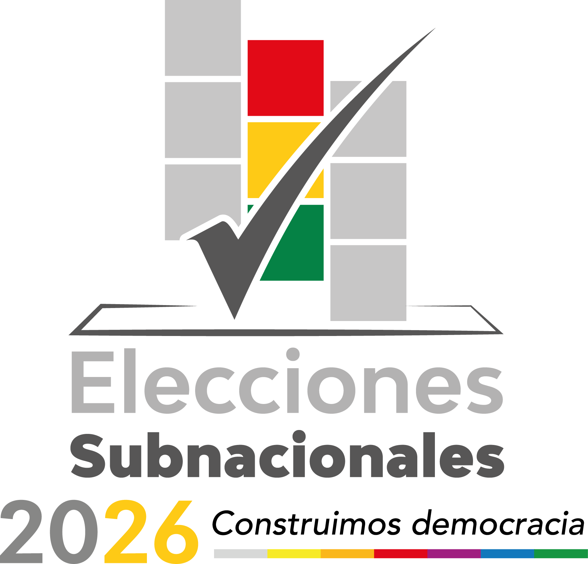
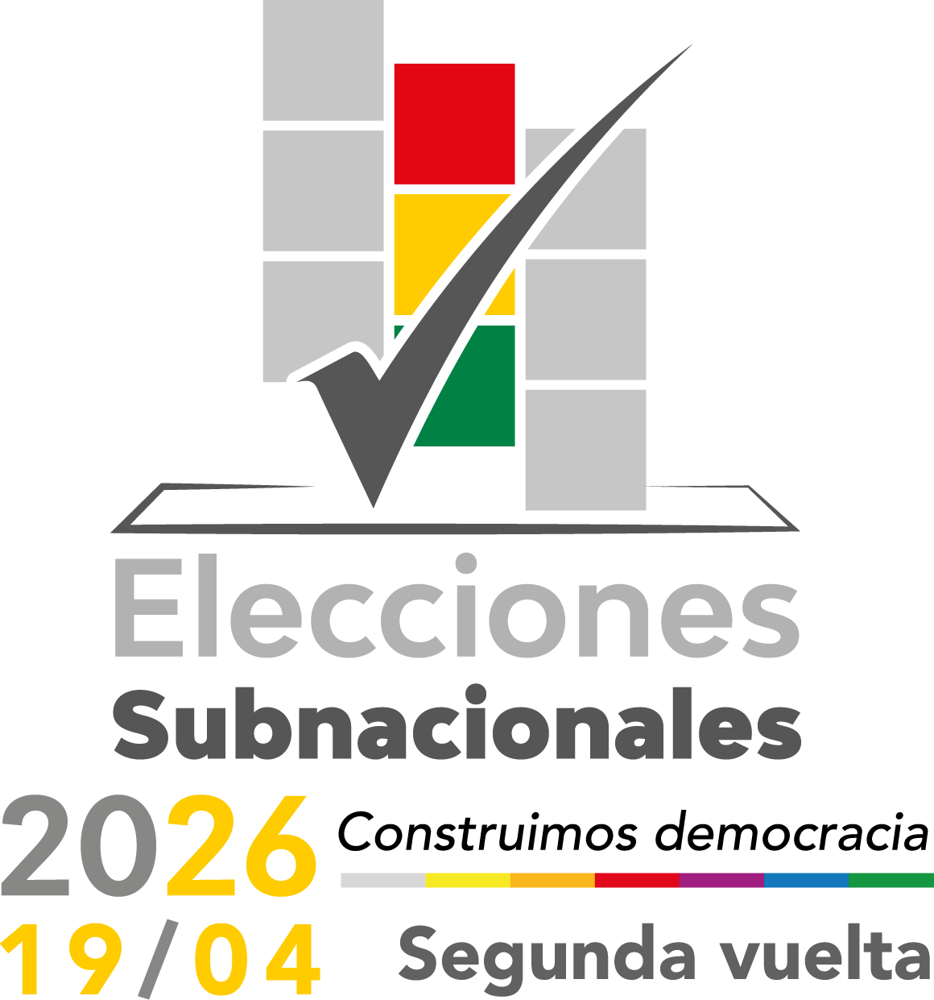
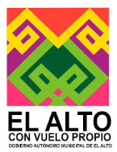
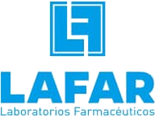
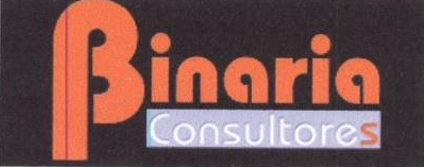

×

Tecnologías:
> Inicializando sistema...
> +14 años de experiencia en desarrollo de software y sistemas empresariales
> Especialista en arquitecturas backend con Java, Spring Boot y WebFlux
> Frontend: Angular | React | JavaScript
> Databases: MySQL | PostgreSQL | SQL Server
> Estado: ONLINE
Desarrollo avanzado de APIs REST, microservicios y sistemas empresariales con Java, Spring Boot y WebFlux.
Aplicaciones modernas utilizando Angular, React, Laravel, PHP y JavaScript.
Experiencia en plataformas biométricas, monitoreo, seguridad ciudadana y soluciones institucionales.
Administración de servidores Linux, Apache, GlassFish, LAMP y monitoreo tecnológico.
Escuela Militar de Ingeniería - Estudios de Posgrado.
Egresado de Maestría en EMI.
Especialización en desarrollo web moderno y arquitecturas empresariales.
Desarrollo frontend moderno y aplicaciones SPA.
Servicios avanzados y administración de datos móviles.
Administración y optimización de bases de datos empresariales.
Desarrollo, mantenimiento e interoperabilidad de sistemas biométricos, registro civil y plataformas electorales nacionales.

Elecciones Judiciales
Elecciones Generales
Elecciones Generales - Segunda Vuelta
Referéndum
Subnacionales
Subnacionales - Segunda Vuelta
Jefe de Unidad de Soluciones Tecnológicas y Director de Tecnologías.

\nAnalista desarrollador de sistemas con PHP y MySQL.

\nDesarrollo y mantenimiento de sistemas empresariales.
Desarrollo y mantenimiento de sistemas empresariales.
Monitoreo y control de seguridad ciudadana.
Visualización inteligente de zonas críticas.
Sistema de cámaras de videovigilancia.
Aplicación móvil y administrativa.
Aplicación desarrollada para soluciones específicas.
Supervisión y análisis de datos en tiempo real.
Desarrollo y mantenimiento de sistemas biométricos e interoperabilidad.
\n \n
\n Desarrollo de sistemas tecnológicos y soluciones de seguridad ciudadana.
\nDesarrollo de sistemas empresariales y administración de datos.
\nDesarrollo y mantenimiento de soluciones tecnológicas.
\n